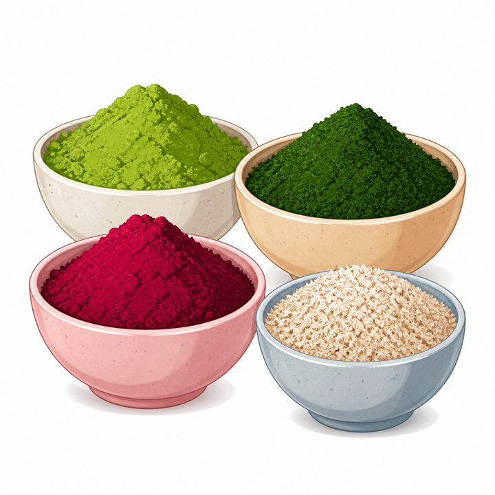

Herb Powders
হোমমেইড মেথি গুঁড়া | Girosto
SKU: GIR-163
বাজারের খোলা বা প্যাকেট মেথি গুঁড়ায় অনেক সময় পুরোনো বীজ, ধুলাবালি বা অন্য কোনো সস্তা গুঁড়া মিশে থাকার আশঙ্কা থাকে, আর কিনে আনার পর দেখা যায় ঘ্রাণও আগের মতো নেই। গিরস্তের মেথি গুঁড়া তৈরি হয় বাছাই করা মেথি বীজ পরিষ্কার করে, শুকিয়ে ও গুঁড়া করে — কোনো ভেজাল, কৃত্রিম রং বা প্রিজারভেটিভ ছাড়াই।
মেথির তেতো-মিষ্টি ঘ্রাণ আমাদের রান্নাঘরের খুব চেনা একটি স্বাদ। বীজ ভিজিয়ে, ভেজে বা বেটে নেওয়ার ঝামেলা এড়িয়ে হাতের কাছে তৈরি গুঁড়া থাকলে ভুনা, ডাল, সবজি কিংবা আচারে সঠিক মাত্রায় মেথির স্বাদ যোগ করা অনেক সহজ হয়ে যায়।
৳160
Product availability, appearance, and delivery time may vary. Contact Girosto if you need sourcing or ingredient details.
গিরস্তের হোমমেইড মেথি গুঁড়া কেন বেছে নেবেন?
শুধু "খাঁটি" লেখা থাকলেই একটি গুঁড়া মসলা বিশ্বাসযোগ্য হয়ে যায় না। গিরস্তের মেথি গুঁড়া যতটা সম্ভব সরল প্রক্রিয়ায় রাখা হয়েছে, যাতে প্রতিদিনের রান্নায় মন থেকে ব্যবহার করা যায়।
- শুধু মেথি, আর কিছু নয়: ওজন বাড়াতে অন্য কোনো গুঁড়া মেশানো হয় না।
- প্রিজারভেটিভমুক্ত: মেয়াদ বাড়ানোর জন্য কোনো রাসায়নিক যোগ করা হয় না।
- কৃত্রিম রং বা ফ্লেভার নেই: গুঁড়ার রং ও ঘ্রাণ আসে মেথি থেকেই।
- বাছাই করা বীজ: ভাঙা, পোকায় কাটা ও নিম্নমানের বীজ আলাদা করে নেওয়া হয়।
- মিহি ও ব্যবহারে সহজ: রান্নায় দলা না পাকিয়ে সহজে মিশে যায়।
- ঘরোয়া ধাঁচের তৈরি: ছোট পরিসরে, পরিচিত পদ্ধতিতে প্রস্তুত করা হয়।
মেথি গুঁড়া কী?
মেথি গুঁড়া (Fenugreek Powder) হলো মেথি বীজ শুকিয়ে মিহি করে গুঁড়া করা একটি মসলা। এর স্বাদে হালকা তেতো ভাব ও এক ধরনের মিষ্টি-মিষ্টি ঘ্রাণ থাকে, যা ভুনা, ডাল, সবজি ও আচারের স্বাদে আলাদা গভীরতা আনে। উপমহাদেশের রান্নায় বহু প্রজন্ম ধরে মেথি ব্যবহার হয়ে আসছে, কখনো গোটা বীজ, কখনো গুঁড়া হিসেবে।
গোটা বীজ রান্নায় দিলে অনেক সময় দাঁতে লাগে বা অসমানভাবে তেতো লাগে। গুঁড়া করা থাকলে সেটা ঝোল বা মসলার সঙ্গে সমানভাবে মিশে যায়, ফলে স্বাদ ধরে রাখা সহজ হয়।
মেথি গুঁড়ার ব্যবহার
গিরস্তের মেথি গুঁড়া রান্নাঘরে নানা কাজে লাগানো যায়:
- মাছ, মাংস ও সবজির ভুনা বা ঝোলে সামান্য মেথির স্বাদ আনতে
- ডাল ও খিচুড়ির সঙ্গে মেশাতে
- ঘরে তৈরি আচারের মসলায়
- নিজের মতো করে মসলার মিশ্রণ (spice blend) বানাতে
- পরোটা বা রুটির আটায় মিশিয়ে ভিন্ন স্বাদ আনতে
- ঘরোয়া পদ্ধতিতে চুল ও ত্বকের যত্নে (প্যাক হিসেবে)
গিরস্তের মেথি গুঁড়ার বৈশিষ্ট্য
মেথি গুঁড়া প্রতিদিনের রান্নায় ঐতিহ্যবাহী স্বাদ যোগ করার একটি সহজ উপায়। সঠিকভাবে সংরক্ষণ করলে এটি অনেকদিন ধরে ব্যবহার করা যায়।
১. রান্নার ধাপ কমায়
বীজ ভিজিয়ে, ভেজে বা বেটে নেওয়ার আলাদা কাজ ছাড়াই সরাসরি রান্নায় দেওয়া যায়।
২. মাত্রা ঠিক রাখা সহজ
মেথির তেতো স্বাদ বেশি হয়ে গেলে রান্না নষ্ট হতে পারে। গুঁড়া থাকলে চিমটি বা আধা চামচ করে মেপে দেওয়া যায়।
৩. মসলার মিশ্রণে মানানসই
অন্যান্য গুঁড়া মসলার সঙ্গে সহজে মিশে যায়, তাই নিজের পছন্দের ব্লেন্ড বানাতে সুবিধা।
৪. কম জায়গায় সংরক্ষণযোগ্য
একটি ছোট কৌটাতেই অনেকদিনের মেথি রাখা যায়।
৫. কৃত্রিম উপাদানমুক্ত
রং, ফ্লেভার বা প্রিজারভেটিভ না থাকায় পরিবারের নিয়মিত রান্নায় নিশ্চিন্তে ব্যবহার করা যায়।
মেথি গুঁড়া কীভাবে ব্যবহার করবেন?
মেথি গুঁড়া ডাল, সবজি, মাছ-মাংসের তরকারি ও বিভিন্ন মসলার মিশ্রণে ব্যবহার করে খাবারে আলাদা স্বাদ ও ঘ্রাণ আনতে পারেন।
- তরকারি বা ভুনায় সাধারণত আধা চা-চামচ দিয়ে শুরু করুন। মেথি বেশি হলে তেতো লাগে, তাই স্বাদ দেখে ধীরে ধীরে বাড়ান।
- রান্নার শুরুতে গরম তেলে অল্প সময় নেড়ে নিলে ঘ্রাণ ভালোভাবে খোলে, তবে বেশি সময় ভাজবেন না, পুড়ে গেলে তেতো স্বাদ বেড়ে যায়।
- ডাল বা খিচুড়িতে ফুটে ওঠার সময় এক চিমটি মিশিয়ে দেওয়া যায়।
- আচারের মসলা তৈরির সময় অন্যান্য শুকনো মসলার সঙ্গে মিশিয়ে নিন।
- আটার সঙ্গে মেশাতে চাইলে প্রতি কাপ আটায় সামান্য পরিমাণ দিয়ে শুরু করুন।
- ঘরোয়া প্যাকের জন্য সামান্য গুঁড়া দই বা পানির সঙ্গে মিশিয়ে নেওয়া যায়। প্রথমবার ব্যবহারের আগে হাতের ছোট অংশে পরীক্ষা করে নিন।
কারা সতর্কতার সঙ্গে ব্যবহার করবেন?
মেথি আমাদের দেশে সাধারণ খাবারের উপকরণ। তবে কারও নির্দিষ্ট শারীরিক অবস্থা থাকলে, যেমন গর্ভাবস্থা, ডায়াবেটিস বা রক্ত পাতলা করার ওষুধ গ্রহণ, কিংবা চিনাবাদাম বা ছোলার মতো ডালজাতীয় খাবারে অ্যালার্জি থাকলে, নিয়মিত বা বেশি পরিমাণে খাওয়ার আগে চিকিৎসকের পরামর্শ নেওয়া ভালো। এটি কোনো ওষুধ নয় এবং কোনো রোগ নিরাময়ের দাবি করা হচ্ছে না।
সংরক্ষণের নিয়ম
সঠিকভাবে রাখলে মেথি গুঁড়ার ঘ্রাণ ও স্বাদ বেশিদিন ভালো থাকে।
- কৌটার মুখ শক্তভাবে বন্ধ রাখুন।
- সরাসরি রোদ ও ভেজা জায়গা থেকে দূরে রাখুন।
- ঠান্ডা ও শুষ্ক স্থানে সংরক্ষণ করুন।
- প্রতিবার শুকনো চামচ ব্যবহার করুন, যাতে গুঁড়া জমাট না বাঁধে।
- প্যাকেটে উল্লেখিত মেয়াদের মধ্যে ব্যবহার করুন।
মেথি গুঁড়া Specification
|
বিষয় |
বিস্তারিত |
|
পণ্যের নাম |
মেথি গুঁড়া |
|
Product Type |
Fenugreek (Methi) Powder |
|
প্রস্তুতপ্রণালী |
বাছাই করা মেথি বীজ পরিষ্কার, শুকিয়ে গুঁড়া করে তৈরি |
|
ভেজাল/মিশ্রণ |
যোগ করা হয় না |
|
প্রিজারভেটিভ |
নেই |
|
কৃত্রিম রং/ফ্লেভার |
নেই |
|
ব্যবহার |
রান্না, মসলার মিশ্রণ, আচার, ঘরোয়া যত্নে |
|
Storage |
ঠান্ডা ও শুষ্ক স্থানে, কৌটার মুখ বন্ধ রেখে |
|
বিক্রেতা |
Girosto – গিরস্ত |